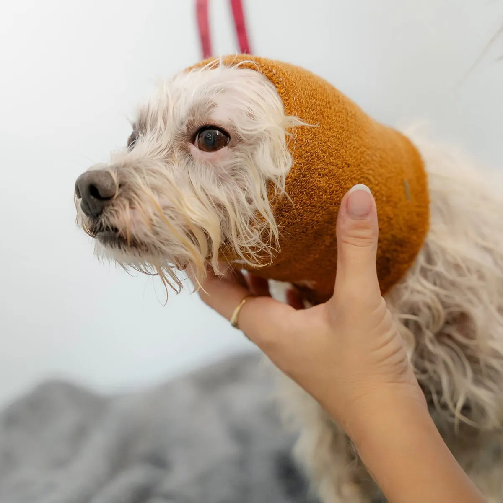

Consejos para
su día a día.
Cepillado, muda, primera visita… Guías cortas y claras para cuidar su manto en casa. Siempre con un recordatorio: ante cualquier duda de salud, su veterinario.
Cuatro estaciones.
Un mismo cariño.
Cada época trae pequeños cambios. Elige una estación y encuentra tres gestos para acompañarlos.

Menos pelo suelto. Más paseo.
La muda no sigue un día exacto del calendario. Observa cómo cambia su pelo y adapta el cepillado a lo que realmente necesita.
- Revisa el pelo suelto con la herramienta adecuada para su manto.
- Comprueba axilas y zonas de roce después de los paseos.
- Consulta si necesita deslanado; no todos los perros tienen subpelo.

Su manto también le protege.
El calor no significa que haya que rapar. Antes de cambiar la longitud, conviene conocer el tipo de pelo y elegir un cuidado que respete su estructura.
- Mantén una rutina amable para retirar el pelo suelto.
- Pregunta antes de pedir un corte muy corto en un doble manto.
- Prepara sombra, agua y paseos fuera de las horas de más calor.

Lluvia fuera. Cuidados dentro.
Con los días húmedos, aprovecha la vuelta del paseo para mirar el manto. Una rutina sencilla ayuda a detectar los pequeños enredos antes de que se acumulen.
- Retira el exceso de agua con una toalla, sin frotar con fuerza.
- Revisa las zonas que rozan con arneses y chubasqueros.
- Cuéntanos si le preocupa el ruido del secador al reservar.
El cuidado no se toma vacaciones.
Llevar el pelo más largo no elimina el mantenimiento. Organiza un cuidado cómodo para él y realista para vuestra rutina, también cuando hace frío.
- Comprueba los nudos bajo el abrigo y detrás de las orejas.
- Elige sesiones breves de cepillado en un lugar tranquilo.
- Acuerda el baño y el arreglo según su manto, no solo la estación.
Calendario orientativo para A Laracha. La muda y las necesidades cambian con cada perro y su entorno; no son fechas de cita obligatorias. PDSA ↗ · AKC ↗
Cinco guías
para cuidarlo.

Cepillar bien, sin tirones ni lágrimas
Qué cepillo elegir según su pelo, cómo trabajar por capas y por qué un nudo pequeño hoy es un problema grande mañana.
Leer el consejo ↗La muda: por qué suelta tanto y cómo llevarla mejor
La muda es natural, pero se puede llevar mejor. Qué ayuda, qué no conviene hacer y por qué también afecta a los perros de pelo corto.
Leer el consejo ↗
Primera visita a la peluquería: cómo prepararlo (y prepararte)
Una checklist sencilla para que la primera vez sea tranquila: qué hacer antes, qué contarnos y cómo despedirte.
Leer el consejo ↗El secador, a su ritmo
Cómo preparar una visita si el ruido o el aire le preocupan: información, adaptación gradual y pausas.
Leer el consejo ↗Seis mitos sobre su manto
Rapados, baños y cepillado: seis frases habituales que merecen una explicación antes de convertirse en rutina.
Leer el consejo ↗¿Qué necesita
tu peludo?
Tres preguntas y te decimos por dónde empezar. Sin registros: el resultado se queda en tu pantalla y, si quieres, se lo mandas a Shadia por WhatsApp.
¿Tienes una duda concreta?
Cuéntanos cómo es, qué le gusta y qué necesita. Del resto nos encargamos nosotros, con calma.